Ice cream making is a serious science, but to produce a flavor that replicates the experience of trying a favorite dessert for the first time, it requires artistry and flair. Out of respect for the craft and art of ice cream making, I’ve visited every homemade ice cream shop within 20 miles of downtown Seattle, no matter how small or large. This includes every restaurant making their own ice cream, like Cornelly, How to Cook a Wolf, Lupo, and Off Alley, to name a few. A handful of bars even make their own, among them Canon and Tavern Law.
Several flavors stood out among the classics
Best Vanilla Soft ServeIndigo Cow
Best Vanilla FlavorDelancey
Best Chocolate FlavorLeft as an exercise for the reader
Best Strawberry FlavorThe Window Strawberry Cheesecake Sandwich
Best Matcha FlavorMatcha Man
Honorable mentions
Photo: James Douthit
Now, to get into the best ice creams in our city. Out of hundreds of flavors, these were the top 7:
7
The Window
Number 7: Ice Cream Taco
Changes monthly
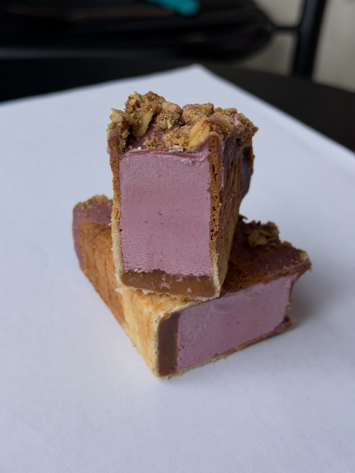
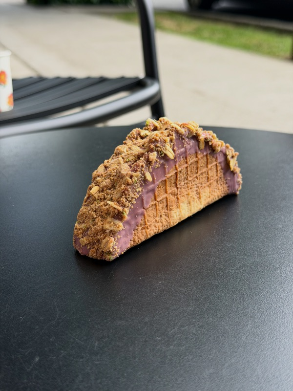
Photos: James Douthit
The Window’s Ice Cream Taco changes month-to-month, each one somehow more fun than the last. June’s is a Blackberry Lime Taco, filled with a delicate, lightly tangy blackberry ice cream replete with fresh fruit flecks and flavors. A still-crunchety waffle cone “taco” shell is topped with oat streusel and oxymoronically lavender-colored white chocolate, with a strongly sour lime caramel filling along the bottom that’s a tad puzzling, though it’s a surprisingly delightful accompaniment to the ice cream. Somewhat expensive, but what isn’t in Seattle? Aim to get here close to open, because the Taco has been selling out before close.
6
Frankie and Jo’s
Number 6: Pineapple Key Lime Custard Pie
June onlyNot pictured
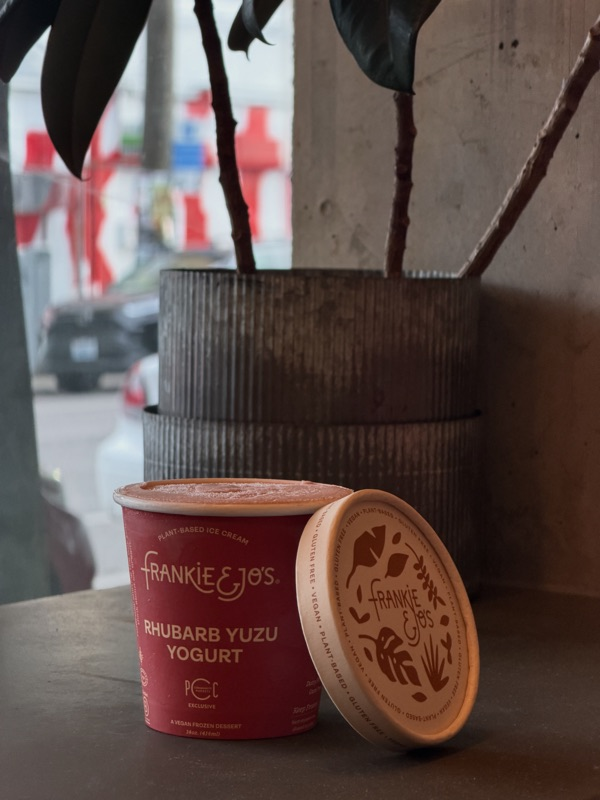
Photo: James Douthit
On a legendary menu from some of Seattle’s ice cream masters, the June-only Pineapple Key Lime Custard Pie stands above. I’ve never encountered a vegan pie crust as crispy and delicious, and they’ve managed to do it submerged in ice cream. Did I mention the ice cream itself is delectably smooth and creamy? Flavor-wise, it isn’t ashamed to flaunt fresh lime zest, fresh pineapple, and a fresh-tasting custard that somehow lacks eggs. During the month of June, this is top 3 in Seattle and a must-try for pineapple lovers, key-lime lovers, lovers of fruity ice cream everywhere.
5
Hellenika Cultured Creamery
Number 5: Lemon Poppyseed
From mid-July
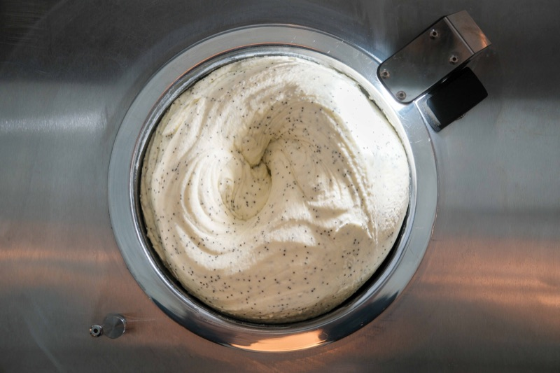
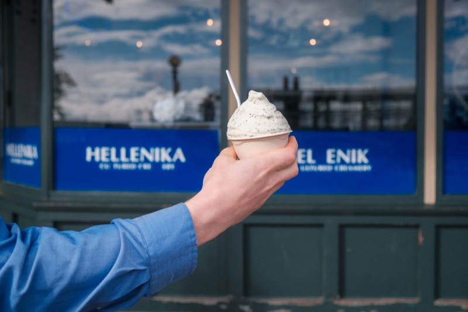
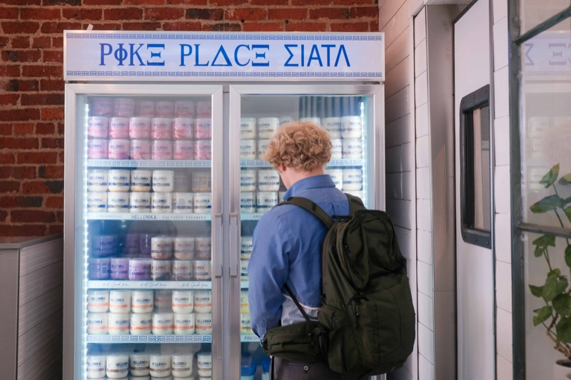
Photos: Manik Kumar
Available starting mid-July, but also specially available for a short time until the end of June accompanying this article, Lemon Poppyseed highlights everything amazing about Hellenika’s base. Indulgent, tongue-coating yogurt lends itself perfectly to the muffin flavor profile — evoking fond memories of the perfect tangy lemon glaze alongside the tiny, crunchy “pop” of the seeds. The line here is usually long, so bring a friend to wait with you.
4
Molly Moon’s
Number 4: Blueberry Pie
June only
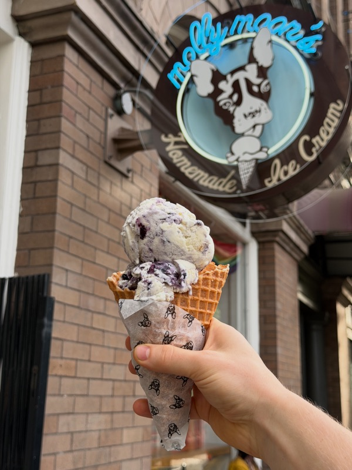
Photo: James Douthit
Blueberry Pie is Molly Moon’s June-exclusive flavor, and it’s a can’t-miss. The buttery pie crust somehow, almost magically, remains flaky and delicate. I’m pretty sure Houdini would’ve still struggled to keep this real-butter pie crust crunchy, even though this one’s not vegan. Next to the pie crust, blueberry jam veins pack summer flavor, with a hint of wild blueberries and none of the requisite ice that can accompany frozen fruit veins. When I’m done with my scoop, I feel like a bear who’s just stolen a pie fresh from a village windowsill. Except luckier, because I can turn around to get back in line whenever I finish this one.
3
Sweet Alchemy / Elixir
Number 3: London Fog
Always in rotation
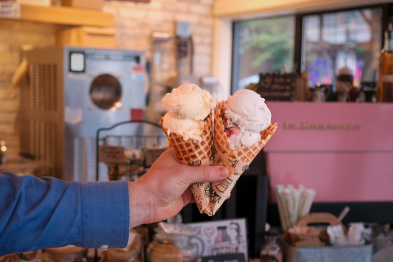
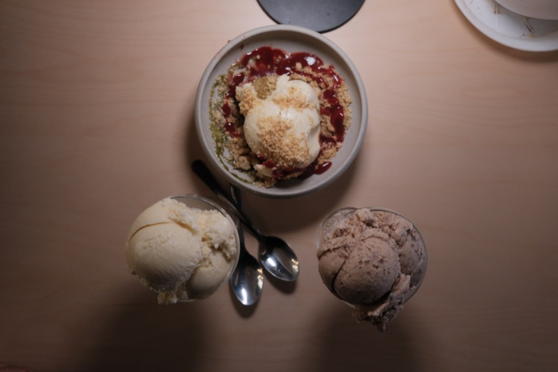
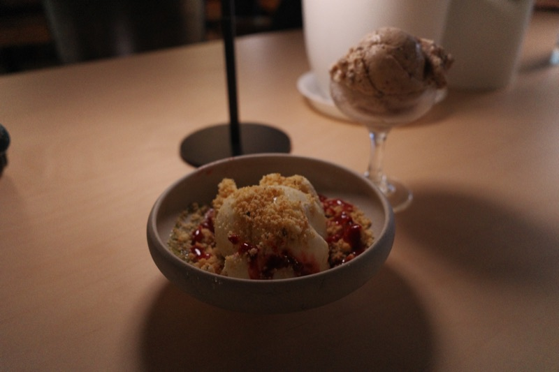
Photos: Manik Kumar
Light and dreamy, this flavor is part of Sweet Alchemy’s constant rotation. The Earl Grey base is delicate, but strong enough to linger and build on the tongue. This scoop’s texture is the slightest bit slushy, so finding it in third place is a testament to the sophisticated yet exuberant flavor experience of bergamot with malty black tea. At Elixir, their “Dessert and Cocktail Lounge,” this flavor is the deserving centerpiece of their Mad Tea Party dish. The London Fog ice cream is placed on a little matcha cake round, then a raspberry yuzu sauce is drizzled over it — tableside, for some reason. I’m not complaining, though, because with and without raspberry sauce this flavor is an absolute joy.
2
Gelatiamo
Number 2: Pistachio
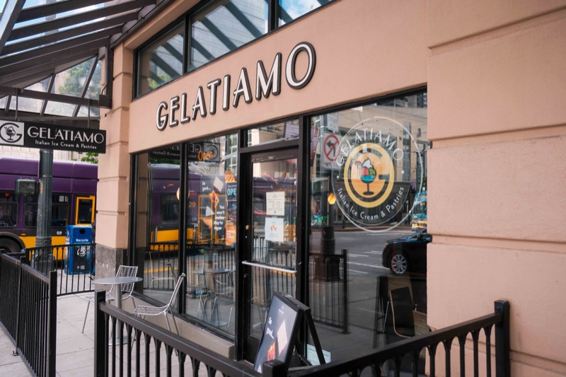
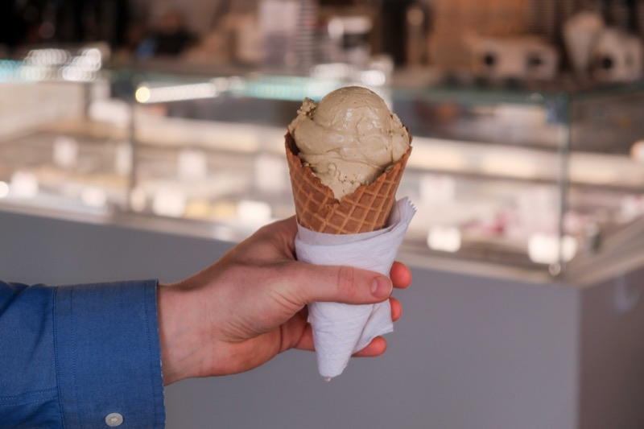
Photos: Manik Kumar
Gelatiamo snuck up on me, with an unassuming and perhaps even generic appearance. Don’t judge this book by its cover, though, because they make all of their own gelato in-house, which you might not guess from the classic gelato cases. I’ve asked several times where they’re getting the Pistachios, because their cultivar has a taste with a uniquely fresh, buttery, even grassy note that’s unique in the PNW. And true pistachio lovers know it’s hard to find pistachio flavors without a “metallic” aftertaste – which Gelatiamo luckily lacks! Sweet, clean, and nutty, this flavor stands tall.
1
Bluebird Phinney Ridge
Number 1: Maple Hickory
August onlyUpcoming
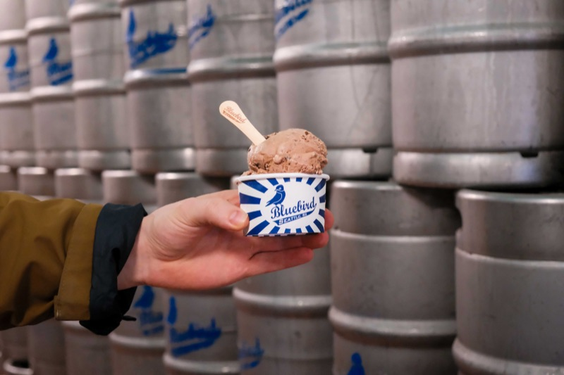
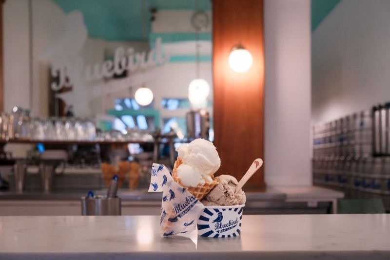
Photos: Manik Kumar
The August-only flavor at Bluebird varies with the syrup and the wood used to make it, so every batch is phenomenal in a unique way. It’s the only ice cream to ever remind me of the best parts of camping, it’s the only maple flavor to ever remind me of the nutty-sweet maple syrup a neighbor made by tapping the sugar & black maples across our front yards in Ames, Iowa. And it’s the only ice cream flavor I’ll be having for all of August.